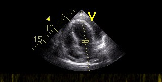

Coupe sous-xiphoïdienne du péricarde

123456D
Quatre cavités, pas de liseré circulant.
Liseré anéchogène. La taille ne décide pas seule de la ponction.
Le collapsus auriculaire droit s'ajoute à la lame.
- 1 Foie
- 2 Ventricule droit
- 3 Ventricule gauche
- 4 Oreillette droite
- 5 Oreillette gauche
- 6 Péricarde virtuel
- 1 Foie
- 2 Ventricule droit
- 3 Ventricule gauche
- 4 Oreillette droite
- 5 Oreillette gauche
- 6 Épanchement péricardique
- 1 Foie
- 2 Ventricule droit
- 3 Ventricule gauche
- 4 Oreillette droite
- 5 Oreillette gauche
- 6 Épanchement péricardique
- 7 Collapsus de l'oreillette droite
Un liseré noir autour du cœur est-il une tamponnade ?
Non. L'épanchement est le liquide. La tamponnade est la compression des cavités, un diagnostic clinique aidé par l'échographie. L'ESC 2015 classe la lame en fin de diastole : inférieure à 10 mm, de 10 à 20 mm, ou supérieure à 20 mm. L'ESC 2025 garde le seuil de 20 mm pour la lame large.
Les signes de compression sont le collapsus auriculaire droit, le collapsus diastolique du ventricule droit, une veine cave inférieure dilatée qui se collabe peu, et une variation respiratoire des flux. Aucun de ces signes, seul, ne remplace la pression artérielle et les jugulaires.
Le cliché source est un secteur 2D d'épanchement (AMC Echolab, CardioNetworks, CC BY-SA 3.0). Ce n'est pas le calque de la coupe sous-xiphoïdienne dessinée.
Schéma pédagogique d'une coupe sous-xiphoïdienne. Cliché source : AMC Echolab, CardioNetworks, E00676, Wikimedia Commons, CC BY-SA 3.0, consulté le 31 octobre 2026. Le secteur 2D a été extrait du fichier ; ce n'est pas le calque du schéma. Repère D à gauche de l'écran.
.jpg){kind=link}